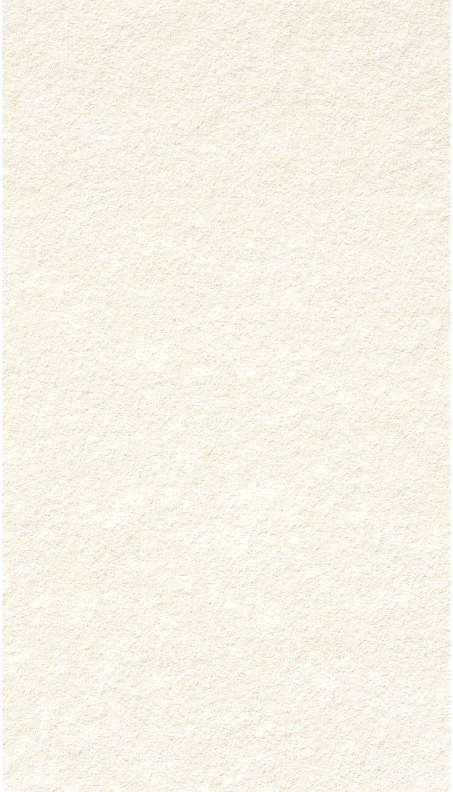

Miss, you may not know or realize this, but you are one of
the most patient, forgiving, and helpful teachers that we
could have gotten. We, as a section, are extremely lucky to
have been assigned under your advisory. You make an effort
to connect with each and every one of us, making sure to greet
us with concern and understanding first instead of scorn. That
may be common sense as a teacher, but the fact that we
actually feel you love and care for us speaks more words than
this letter could ever hold.
Somehow, despite the commonplace nature of students to
develop an aversion to school, some of us began to feel as
though the school was our second home, all because of the
atmosphere you created. When situations at home got
unbearable, we all flocked to the classroom, not because
because we didn't have anywhere else to go or that we were
obliged to, but because when our homes stopped feeling like
➳ Home ➳ Page 2!